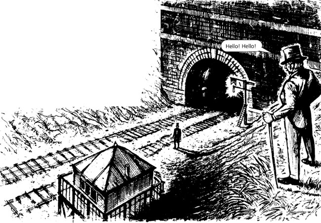
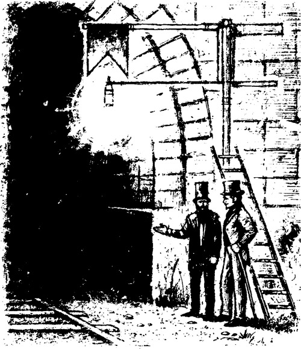
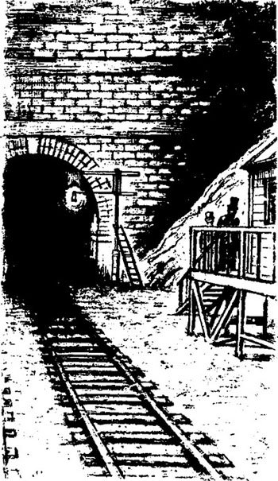

Listen to Part 1:
Vào lúc 9 giờ tối của một buổi tối mùa hè ấm áp, tôi đứng trên đỉnh một con dốc đứng. Con dốc là một bên của vết cắt đường sắt. Tôi nhìn xuống. Vết cắt rất sâu. Có hai đường ray ở dưới cùng của vết cắt.
Tôi nhìn về bên phải - hướng về London. Đường ray biến mất trong một đường hầm. Đó là một đường hầm dài xuyên qua một ngọn đồi lớn. Lối vào đường hầm rất tối.
Sau đó, tôi nhìn về bên trái - hướng về Dover. Đường ray thẳng tắp trong nhiều dặm. Tôi không thấy bất kỳ đoàn tàu nào trên đường ray.
Tôi lại nhìn xuống vết cắt.
Có một hộp tín hiệu ở dưới cùng của vết cắt. Hộp tín hiệu là một tòa nhà gỗ nhỏ. Sàn của nó cao hơn mặt đất bốn feet. Hộp tín hiệu nằm cạnh đường ray. Và nó cách lối vào đường hầm năm mươi feet.
Một nhân viên tín hiệu đang đứng bên đường ray bằng kim loại. Ông đứng bên ngoài hộp tín hiệu. Ông đang cầm một lá cờ đỏ. Lá cờ là một miếng vải đỏ trên một cán gỗ dài.
Có một lá cờ khác trên một cột kim loại cao gần lối vào đường hầm. Lá cờ đó màu trắng. Cũng có hai ngọn đèn trên mặt đất, gần cột. Các ngọn đèn không sáng. Một cái thang kim loại được gắn vào cột.
Nhân viên tín hiệu đi đến cột và thắp sáng một trong những ngọn đèn. Ông leo lên thang và lấy lá cờ trắng khỏi cột. Sau đó, ông đặt lá cờ đỏ lên cột và đặt ngọn đèn dưới lá cờ. Ánh sáng từ ngọn đèn màu đỏ.
Nhân viên tín hiệu trèo xuống thang và thắp sáng ngọn đèn còn lại. Ánh sáng từ ngọn đèn này màu trắng. Người đàn ông giơ cao ngọn đèn và nhìn xung quanh. Sau đó, ông bắt đầu quay trở lại hộp tín hiệu.
Tôi hét xuống với ông.
Listen to Part 2:

Nhân viên tín hiệu nghe thấy giọng nói của tôi nhưng ông không nhìn lên tôi. Ông quay lại và nhìn về phía đường hầm. Tôi đã rất ngạc nhiên. Tôi ở trên ông, ở đỉnh của vết cắt. Tại sao nhân viên tín hiệu lại nhìn về phía đường hầm?
Người đàn ông quay lại lần nữa, và tôi nhìn thấy khuôn mặt ông. Ông ấy đã sợ hãi! Tại sao nhân viên tín hiệu lại sợ hãi?
Tôi lại hét lên. 'Xin chào! Xin chào!'
Cuối cùng, nhân viên tín hiệu nhìn lên tôi.
'Tôi muốn nói chuyện với ông!' Tôi hét lên. 'Có một con đường vào vết cắt này không?'
Nhân viên tín hiệu nhìn tôi, nhưng ông không trả lời.
Đột nhiên, mặt đất bắt đầu rung chuyển. Có một tiếng ồn lớn và một đoàn tàu lớn lao ra khỏi đường hầm. Những đám khói trắng bốc lên từ vết cắt. Sau đó, khói biến mất và tôi lại nhìn thấy đoàn tàu. Nó đã đi xa. Nó đang đi đến Dover.
Nhân viên tín hiệu đang đi về phía đường hầm.
Tôi lại hét câu hỏi của mình. 'Xin chào! Xin chào! Có một con đường vào vết cắt này không?'
Listen to Part 3:
Nhân viên tín hiệu dừng lại và nhìn tôi. Sau đó, ông giơ lá cờ trắng của mình lên. Ông chỉ về phía bên trái của tôi.
Tôi nhìn sang trái. Cách đó khoảng ba trăm feet, có một con đường.
'Cảm ơn ông!' Tôi hét lên.
Con đường rất dốc. Mặt đất rất ẩm ướt và lầy lội. Tôi cẩn thận đi xuống vết cắt. Có một lần, tôi dừng lại và nhìn nhân viên tín hiệu. Ông đứng bên một đường ray. Ông đang quan sát tôi. Ông đang quan sát và chờ đợi. Ông không vui. Tại sao?
Tôi đến dưới cùng của vết cắt. Tôi đi bên cạnh đường ray bằng kim loại. Tôi đi về phía nhân viên tín hiệu.
Có những bức tường đất ở hai bên vết cắt. Các bức tường rất cao và chúng tối và ẩm ướt. Nước đang chảy xuống các bức tường. Tôi ngước lên và nhìn thấy một mảnh bầu trời nhỏ. Bầu trời có màu cam và đỏ. Mặt trời đang lặn vào cuối ngày. Nhưng mặt trời không chiếu vào vết cắt.
Trước mặt tôi là lối vào tối tăm của đường hầm dài. Một cơn gió lạnh thổi qua đường hầm. Gió có mùi lạnh và chết chóc. Đột nhiên, tôi thấy lạnh. Tôi rất lạnh!
Ngay sau đó, tôi đã đứng bên cạnh nhân viên tín hiệu. Người đàn ông có mái tóc đen và khuôn mặt tái nhợt. Bộ râu và lông mày của ông rậm và đen.
'Chào buổi tối', tôi nói với nhân viên tín hiệu. 'Ông làm việc ở một nơi cô đơn. Ông có thích khách không?'
Người đàn ông không trả lời. Tôi cười với ông.
Listen to Part 4:
'Tôi sẽ kể cho ông về bản thân tôi', tôi nói. 'Tôi đã làm việc trong một văn phòng trong ba mươi năm. Giờ đây, tôi đã nghỉ hưu. Bây giờ tôi không làm việc nữa.'
Người đàn ông không trả lời.
'Tôi rất hứng thú với đường sắt', tôi nói. 'Tôi là một cậu bé sáu mươi năm trước. Khi đó không có tàu hỏa, và cũng không có đường ray. Bây giờ, tôi đang đi khắp nước Anh. Tôi đang thăm các tuyến đường sắt. Tôi muốn thấy những đoàn tàu lớn. Và tôi muốn nhìn thấy những đường hầm dài và những cây cầu lớn. Con người có thể làm ra những điều tuyệt vời trong thế kỷ mười chín này!'
Nhân viên tín hiệu không nói gì với tôi. Ông đang nhìn vào lối vào đường hầm. Và ông đang nhìn vào ngọn đèn đỏ bên cạnh lối vào. Ông ấy có đang đợi ai đó không?
'Ông có chăm sóc cờ và đèn không?' Tôi hỏi người đàn ông. Đó là công việc của ông. Tôi biết điều đó. Nhưng tôi muốn người đàn ông nói.
'Vâng, tôi chăm sóc cờ và đèn', ông đáp nhẹ nhàng. 'Chúng là tín hiệu.'
'Hãy cho tôi biết về các tín hiệu', tôi nói.
Nhân viên tín hiệu chỉ vào đường ray gần chân mình.
'Đây là Tuyến đường lên - đường ray đến London', ông nói. Sau đó, ông chỉ vào đường ray kia. 'Và kia là Tuyến đường xuống - đường ray đến Dover.'
'Đôi khi, một chuyến tàu đến London phải đợi ở đây', ông nói. 'Đôi khi, có một đoàn tàu trên Tuyến đường xuống, ở đầu kia của đường hầm. Tàu London đợi ở đây bên cột tín hiệu. Tàu Dover đi qua đường hầm. Sau đó, tàu London lại tiếp tục đi. Hai đoàn tàu không được ở trong đường hầm cùng lúc, thưa ông.
Listen to Part 5:
'Hãy cho tôi biết thêm về các tín hiệu của ông', tôi nói.
'Tôi dừng tàu bằng tín hiệu đỏ', nhân viên tín hiệu nói. 'Một tín hiệu màu đỏ là tín hiệu cảnh báo. Vào ban ngày, người lái tàu nhìn thấy lá cờ đỏ của tôi trên cột. Ông ấy dừng tàu của mình. Vào ban đêm, người lái tàu nhìn thấy đèn đỏ của tôi trên cột. Người lái tàu dừng tàu. Lá cờ trắng và đèn trắng báo cho người lái tàu - ĐI QUA ĐƯỜNG HẦM. Người lái tàu nhìn thấy lá cờ trắng hoặc đèn trắng và ông ta không dừng tàu của mình.'
'Tôi hiểu rồi', tôi nói. 'Lá cờ là các tín hiệu ban ngày của ông và đèn là tín hiệu ban đêm của ông.'
'Vâng, thưa ông', người đàn ông nói. 'Điều đó đúng.'

Khuôn mặt của nhân viên tín hiệu tái nhợt. Đôi mắt của ông không chuyển động.
Một suy nghĩ kỳ lạ xuất hiện trong đầu tôi. 'Tôi đang nói chuyện với một người đã chết!' Tôi đã nghĩ.
Sau đó, một suy nghĩ khác xuất hiện trong đầu tôi. 'Người đàn ông này sợ tôi!' Tôi đã nghĩ. 'Tại sao?'
'Ông đang lo lắng!' Tôi nói. Tôi mỉm cười với nhân viên tín hiệu. 'Tôi có làm ông sợ không?'
'Tôi đã lo lắng', ông trả lời. 'Tôi đã gặp ông trước đây chưa? Tôi đã gặp ông ở đó chưa?.'
Listen to Part 6:
Ông chỉ vào cột tín hiệu bên lối vào đường hầm. Tôi nhìn vào cột và ngọn đèn đỏ.
'Thưa ông, tôi chưa bao giờ đứng ở đó', tôi nói. 'Tôi chưa bao giờ ở trong vết cắt đường ray này trước đây.'
Ông ấy nhìn tôi thật kỹ. Sau đó, ông trả lời. 'Không. Không, ông chưa từng ở đây trước đây, thưa ông.
Đột nhiên, nhân viên tín hiệu vui vẻ hơn. 'Hãy vào hộp tín hiệu, thưa ông', ông nói. 'Ở đây lạnh lắm.'
Tôi đi theo ông dọc theo đường ray. Chúng tôi đi lên một số cầu thang gỗ vào hộp tín hiệu.
